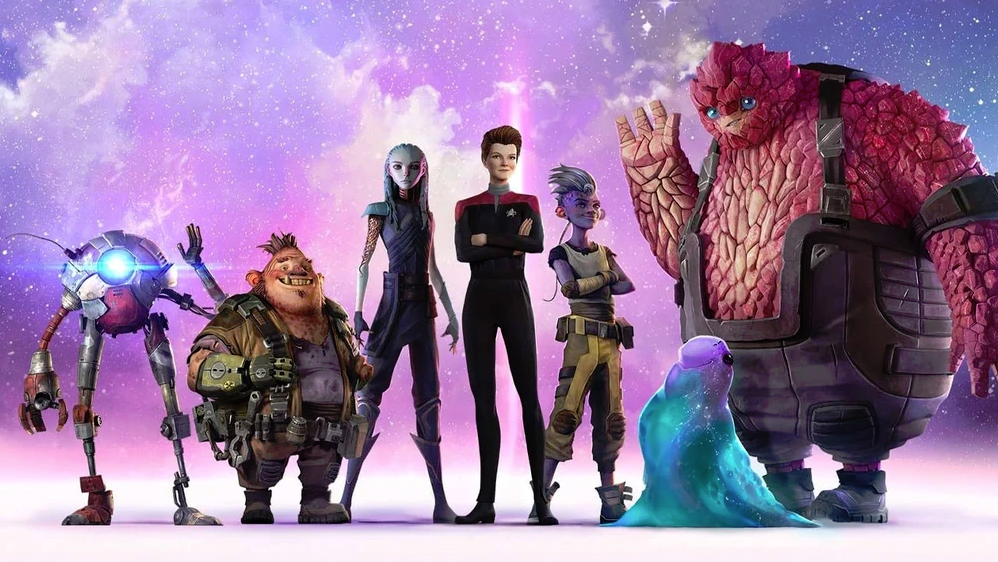

@c6reviews.
@c6reviews.| Star Trek: Prodigy | |
|---|---|
|  | |
| Abbreviation: | PRO |
| Episodes: | 39 (the premiere is double-length) |
| Air dates: | Oct 28, 2021 – Jul 1, 2024 |
| In-universe years: | 2383 – 2385 |
| Universe Timeline Go to full timeline ➡︎ | |||
|---|---|---|---|
| 2363 | |||
| 2364 | Star Trek The Next Generation (TNG) |
||
| 2365 | |||
| 2366 | |||
| 2367 | Battle at Wolf 359 | ||
| 2368 | |||
| 2369 | Star Trek Deep Space Nine (DS9) |
||
| 2370 | |||
| 2371 | Star Trek VOYAGER (VOY) |
Generations | |
| 2372 | |||
| 2373 | First Contact | ||
| 2374 | |||
| 2375 | Insurrection | ||
| 2376 | |||
| 2377 | |||
| 2378 | |||
| 2379 | Nemesis | ||
| 2380 | Star Trek Lower Decks (LOW) |
||
| 2381 | |||
| 2382 | |||
| 2383 | Star Trek Prodigy (PRO) |
||
| 2384 | |||
| 2385 | Rogue Synth Attack on Mars (April 5) | ||
| 2386 | |||
Star Trek: Prodigy is a Nickelodeon production, meaning that its target audience is children, but you will find that the show is just as enjoyable for adults as it is for kids. In fact, of all the post-2017 Trek offerings, this one is perhaps the closest thing to what we might think of as a “traditional” Trek show. It takes place five years after the end of Star Trek: Voyager, and it follows-up on the life stories of Janeway and Chakotay, though it primarily focuses on a team of young Starfleet hopefuls who find an abandoned ship and use it to escape their imprisonment and embark on space adventures.
The show is smartly written, though there is the occasional fart joke and “filler episode” here and there. The story opens on Tars Lamora, where the young adventurers find the lost Starfleet ship, and after its 40-episode run, the show finishes up where it started with the aptly-named series finale, “Ouroboros.” The final episode does set up the potential for a third season, but the show was dropped after season 2. It's still technically possible that someone might pick it up for a third season, but there is no sign of that happening as of June 2025.
Pleasantly surprising!
Prodigy Spoiler Policy
- With this series, I have been a bit more lax about some of the episode descriptions, which may reveal some content of the episode, but I have not spoiled any “big” reveals.
- However, as always, reading an episode review may spoil something from a previous episode.
- Blatant spoilers will be obscured, with a "Spoiler" tag that you can click on to reveal the contents. Don't read the spoiler unless you've seen the episode. Try it here: Spoiler » This is a spoiler!
Understanding Ratings and Recommendations
Everyone has different tastes and opinions, and my opinions certainly aren't always popular. To help combat that, a "final score" on any episode is an average of my rating and the ratings from 2 other independent sources, including IMDb. Though, my rating is weighted a little higher in that calculation, because this is my website, after all. In addition to the ratings, I also provide a "Watch Recommendation" which doesn't necessarily have anything to do with the quality of the episode. Rather, the watch recommendation is based on how important the episode is to the overall story of the entire series, whether that episode is good or bad. See below for more details.
Episode Scores
| Episode Rating | Rating Value Range | Description |
|---|---|---|
| My rating |
★☆☆☆☆ ★★☆☆☆ ★★★☆☆ ★★★★☆ ★★★★★ |
|
| Ex Astris Scientia rating | 0–10 |
|
| Normalized IMDb rating |
0–10 converted from 7.1–8.8 |
|
| FINAL SCORE | 0–10 |
|
Additional Awards
| Award | Description | |
|---|---|---|
| ♥︎ | Personal Favorite | This is a purely subjective distinction that indicates an episode that I just particularly like, and there is no accounting for taste. |
| 🥇 | 1st place | These are awarded to what I consider to be the best episodes in the series, but that are also representative of the series. |
| 🥈 | 2nd place | |
| 🥉 | 3rd place | |
| 🎖️ | General Award | A General Award is given to episodes that deserve something a little extra. |
Watch Recommendations
Watch recommendations are mostly based on how important the episode is to the overall series, not necessarily whether the episode is particularly good.
| Category | Description | # of episodes in this series | |
|---|---|---|---|
|
This track is designed for someone who would like the bare-minimum experience to get the "gist" of the series from beginning to end. This track usually includes the series premiere, the series finale, and a smattering of episodes in between. Episodes in this track are frequently also in the "Must Watch" category, but not always. This track doesn't always include high-scoring or iconic episodes; it focuses instead on giving you the quickest glimpse into the important elements to the overall story arc of the entire series. |
12 | ||
| 🕶︎ | MUST WATCH |
This category fills out a lot more of the gaps in the story-telling than the "Bare Minimum" track does, but still only includes the most important and most iconic episodes of a series. "Must Watch" episodes aren't always just the best, highly-rated episodes. This track includes episodes that are the most important for understanding the overall story arc of the series, and that may include some low-rated, "not great" episodes. |
17 5 + 12 from the "Bare Minimum" track |
| ✔︎ | RECOMMENDED |
If you're looking for even more episodes to watch, this recommended list is the place to go. These are episodes that are usually average or above-average, and they might provide more in-depth details about characters and events, but they aren't necessarily crucial to understanding the entire series. |
12 |
| ♦︎ | OPTIONAL | "Optional" episodes are usually ones that wouldn't otherwise be recommended, but might have a special guest character or particular plot point that you might be interested in watching. | 1 |
| - | NO RECOMMENDATION | This is the default. It doesn't mean the episode is bad, it just means that you can skip it without missing anything too important. | 9 |